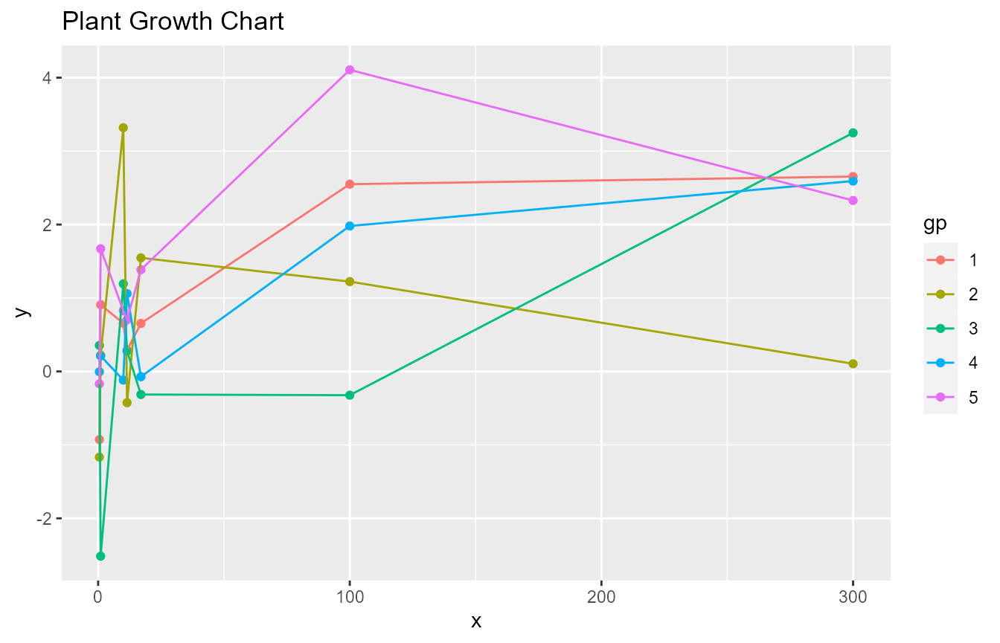
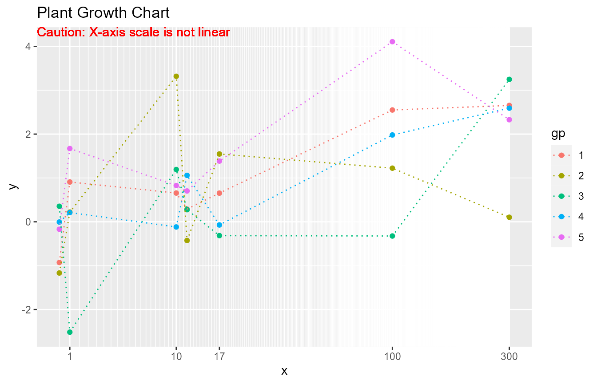

Background - Why using data derived axis transformation
For continuous \(x\) values, the common options for the \(x\)-axis scale could be either linear or log. Assume that the \(x\) vector has a smaller number of distinct values. Some of those \(x\) values could be clustered tightly while others are far away from the cluster. In such case, the plot could have an area that is overfilled and have other areas that are underused.
The function trans_composition() yields linear scale for \(x\)-axis below a breaking point. All unique \(x\) values above the breaking point will be plotted in equal spaces in between. The function trans_loglinear() is based on an algorithm derived log transformation such that the \(x\) values could be spaced out for easier interpreting.
Caution - The use of nonlinear axis scale can be misleading. The use of transformed scales should be clearly noted in the text or on the figure to avoid misleading.
How to use
Below is an example of using default linear scaled axis. The x values are selected to demonstrate the situation that \(x\) values are clustered at the lower side. As shown in the figure below, the details near \(x<15\) are hard to be seen.
library(mtb)
library(ggplot2)
pdt=data.frame(x=rep(c(0.5, 1, 10,11.5,17, 100, 300), each=5), gp=factor(rep(seq(1,5),7)))
pdt$y=log10(pdt$x)+rnorm(length(pdt$x))
p=ggplot(pdt, aes(x=x, y=y, group=gp, color=gp))+geom_point()+geom_line()+
ggtitle("Purple-Heirloom Tomato Growth Chart")
p
Below is an example that shows how to use trans_composition() with break point set as 50. Distinct \(x\) values above 50 are plotted with equal spaces in between.
t=trans_composition(pdt$x, nb=30, brk=50, dab=2, dgrd=1, dgrd2=0.2)
p+ scale_x_continuous(trans=t)+ geom_vline(xintercept=t$brk, lwd=6, alpha=0.5, color='lightgray')+ geom_text( x=-Inf, y=Inf, hjust=0, vjust=1, label='Caution: X-axis scale is not linear above 50', color='darkred') Below is another example that shows how to use trans_composition() with break point set as 0. In this example, all \(x\) values are plotted with equal spaces in between.
t=trans_composition(pdt$x, nb=30, brk=0, dab=2, dgrd=1, dgrd2=1)
p+ scale_x_continuous(trans=t)+geom_text( x=-Inf, y=Inf, hjust=0, vjust=1, label='Caution: X-axis scale is not linear', color='darkred') Below is an example that shows how to use trans_loglinear(). The trans_loglinear() transformation increases spaces between smaller x values and that might be only appropriate in certain situations.
t=trans_loglinear(pdt$x, mindist=0.03)
p+ scale_x_continuous(trans=t)+geom_text( x=-Inf, y=Inf, hjust=0, vjust=1, label='Caution: X-axis scale is not linear', color='darkred')
These transformations can work with position_dodge() and other adjustments.